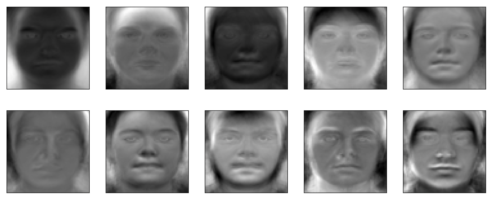

Part 1. Defining Correspondences
To transform one face into another, it's necessary to establish pairs of matching points on both images, maintaining consistent order. I employed ginput to select these points on an image.
After obtaining two matching sets of points (one set for each face), we calculate the average of these points and then perform Delaunay triangulation on this average set of key points.
In total of 45 points are chosen on each face.
Left: George with trangulation, Right: Me with triangulation
Part 2. Computing the "Mid-way Face"
Left: original George, Middle: mid way face, Right: original Me
Part 3. The Morph Sequence
link to morph video: https://youtube.com/shorts/vnxRzrhxLcM?feature=share
Part 4. The "Mean face" of a population
Examples of faces morphed into the dataset average shape:
Left: average face
Right1: my face warped into the average geometry
Right2: the average face warped into my geometry
Part 5. Caricatures: Extrapolating from the mean
Left: alpha=0.5, Right: alpha=1.5
Bells and Whistles 1 (gender change)
Here, I chose to change the gener of me. I used the average face of a Chinese woman to do this.
Left: me, Right: average Chinese woman
Left: morph color only, Middle: morph both shape and appearance, Right: morph shape only.
Bells and Whistles 2 (PCA)
Below I showed the first 10 eigen faces of the population

Using these 10 eigen faces, by selecting random weights to apply to each eigenface and summing these weighted vectors, we can create new faces. Here're 5 examples of them.